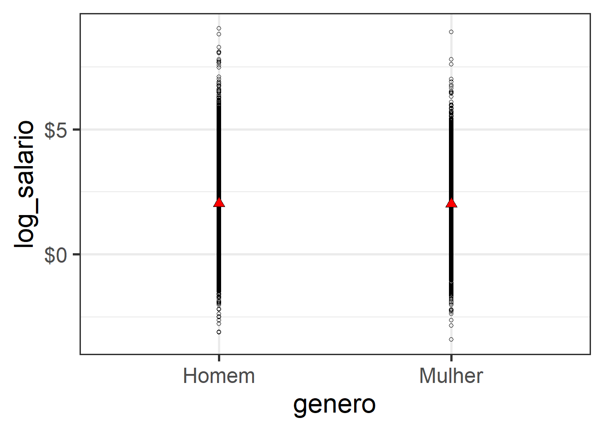

Capítulo 6 O Modelo de Regressão
“Prediction is hard. Specially about the future”. Fonte desconhecida.
6.1 Modelo de Regressão - Teoria
O modelo de regressão (não confundir com regressão linear) é uma forma bem ampla de modelar os dados para prever uma variável de interesse, usualmente designada pela letra \(Y\). Se eu quero prever os votos de candidatas em uma eleição, a votação de cada candidata é minha variável de interesse, \(Y\). Digamos que eu tenho uma amostra da intenção de votos das candidatas, obtidas por meio de uma pesquisa eleitoral. Então, a regressão é uma forma de modelar os dados para prever justamente essa variável \(Y\).
Há muitas formas de apresentar ou motivar regressão linear. O método mais tradicional é pensar que a regressão linear é uma reta que é ajustada aos pontos observados. Porém, não tomaremos esse caminho aqui.
Nós iremos tomar aqui o caminho de considerar que a regressão linear é uma forma de aproximar a chamada “Conditional Regression Function” (CEF, na sigla em inglês). O objetivo é entender “as far as possible with the available data how the conditional distribution of some response y varies across subpopulations determined by the possible values of the predictor or predictors” (Cook and Weisberg, apud Berk, p. 4).
Portanto, vamos retomrar o conceito de esperança condicional, para introduzir em seguida a função de regressão condicional (CEF, em inglês) e então como a regressão pode ser pensada como uma forma de aproximar a CEF.
6.2 Esperança Condicional
Uma das primeiras distinções que temos de fazer é sobre previsão e explicação (causal). Quando queremos prever, estamos interessados em saber quais os provaveis valores de variáveis no futuro, a parte de informações sobre a própria variável e outras no passado. Nesse sentido, é preciso algum tipo de suposição de que o futuro se assemelha ao passado de algum modo. Esse tipo de suposição usualmente toma a forma de um modelo probabilísitco, mas não apenas.
Quando estamos interessados em explicações causais, temos dois tipos de perguntas de pesquisa possíveis. Uma sobre a chamada causa dos efeitos e outra sobre o efeito das causas (Gelman & Imbens, 2013). A causa dos efeitos são perguntas do tipo: o que causal a II Grande Guerra? Ou qual a causa da eleição de Trump ou Bolsonaro? O que explica a desigualdade de renda no Brasil? São todas perguntas em que queremos explicar um efeito, isto é, identificar as causas de um fenômeno (efeito). Já o efeito das causas ão perguntas do tipo: qual o efeito da vacina de covid-19 sobre a mortalidade por Covid-19? Qual o efeito de checagem de notícias sobre a crença de pessoas em desinformação? Qual o efeito da magnitude eleitoral sobre fragmentação partidária? E assim por diante. Aqui, estamos interessados em entender o efeito causal de uma variável sobre outra, sem pretender esgotar todas as explicações de causa possíveis.
A maior parte dos métodos quantitativos existentes são bons para responder perguntas de previsão e de causa dos efeitos. Grosso modo, não há método quantitativo para estimação do efeito das causas, exceto realizar uma série de estudos independentes sobre várias causas dos efeitos, olhando uma causa distinta do mesmo efeito por vez e esperar que isso gere um conhecimento combinado sobre essas múltiplas causas. Mas não há, contudo, uma metodologia bem definida de como combinar esses estudos independentes em um único conhecimento do efeito conjunto das causas.
Assim, nosso curso será dedicado apenas a modelos de previsão e modelos de causa dos efeitos, que é o que temos de metodologias já desenvolvidas e consolidadas. Começamos por essa explicação porque uma perspectiva mais antiga, e ainda comum nas ciências sociais, é que modelos de regressão múltiplas permitem estimar o efeito de várias causas. Isso raramente é o caso e não adotaremos essa perspecitva aqui 1.
6.3 CEF
O que consgtitui uma boa previsão? Tradicionalmente, empregamos a noção de Erro Quadrátco Médio (EQM) para quantificar boas previsões. Quanto menor o EQM, melhor uma previsão. Se o objetivo é, portanto, fazer previsões que minimizem o EQM, iremos apresertar e mostrar que a Função de Esperança Condicional (CEF, na sigla em inglês) é o melhor preditor global possível. Vamos dizer em outras palavras, porque esse resultado é verdadeiramente icnrível. A CEF é o melhor preditor possível dentre todos que existam ou possam vir a existir, entendendo melhor como ter o menor EQM. Por isso que a CEF é o ponto de partida de qualquer preditor que exista, seja uma regressão simples ou algoritmos de aprendizens de máquinas como “random forest” ou mesmo algorítimos de deep learning de redes neurais por traz dos recentes avanços na inteligência artificial.
Mesmo os algorítmos mais avançados de inteleigência artificial, como os Large Language Models, que estão na base de ferramentas como ChatGPT, não podem ter desempenho melhor que a função de experança condicional, CEF, ao fazer uma previsão.
Naturalmente, se esse é o caso, a próxima pergunta que todos nós iremos fazer é: por que não aprender apenas a usar a CEF, que é o melhor preditor possível, e ser feliz para sempre? Porque a natureza não nos diz qual é a CEF. Nós nunca sabemos qual a verdadeira função de esperança condicional. Então tentamos aproximar o melhor possível a CEF, a partir de simplificações da realidade. Em particular, nosso curso pode ser pensado em torno das seguintes perguntas: como aproximar a CEF por meio de regressão linear (combinação lineares de preditores)? Quais as propridades dessa aproximação? Em que condições ela é uma boa aproximação e em que sentido (quantitativo e preciso) podemos falar de boa aproximação? Mais para o final do curso faremos a conexão entre a CEF, modelos preditivos e modelos causais.
6.4 Objetivos de aprendizagem ao final do capítulo
Estudantes deverão ter aprendido ao final do capítulo:
- Reconhecer que a função de esperança condicional, a CEF, em sua forma pura, é o melhor preditor possível para uma variável alvo, dadas as informações de outras variáveis.
- Memorizar que todos os outros predidores, sejam lineares ou não-lineares, incluindo preditores de deep learning, são tentativas de aproximar a CEF.
- Apreciar que o melhor predito linear (isto é, considerando apenas preditores que incluem combinação lineares de variáveis) produz previsões razoáveis, e antecipar que esse preditor nosleva à regressão linear.
6.5 Distribuição dos salários
Vamos considerar os salários de brasileiros. A amostra da PNAD contínua é uma boa forma de analisarmos como é a distribuição de salários. Vamos supor que conseguimos obter uma amostra aleatória dos salários (o que não é exatamente o caso na PNAD contínua, mas vamso abstrair isso aqui para simplificar).
Os gráficos 6.1 e 6.2 apresentam a distribuição dos salários e do logaritmo dos salários no Brasil, a partir de dados da PNAD para 2017.
library(ggplot2)
df <- data %>%
filter(!is.na(renda)) %>%
filter(!is.na(horas_trabalhadas)) %>%
filter(renda > 0) %>%
filter(horas_trabalhadas > 0) %>%
mutate(salario = renda/(4.5*horas_trabalhadas)) %>%
mutate(log_salario = log(salario)) %>%
mutate(genero = as.character(genero))
p1 <- df %>%
ggplot(aes(salario)) + geom_density(aes(weight=V1028)) + theme_bw(base_size = 22)
print(p1)Figure 6.1: Distribuição dos salários
p2 <- df %>%
ggplot(aes(log_salario)) + geom_density(aes(weight=V1028)) + theme_bw(base_size = 22)
print(p2)## Warning in density.default(x, weights = w, bw = bw, adjust = adjust, kernel = kernel, : Selecting bandwidth *not* using 'weights'Figure 6.2: Distribuição do log dos salários
Nós vemos que a distribuição dos salários por hora é tão concentrada em torno do zero, com uma cauda longo, que é difícil visualizar os dados direito. Nesse e em outros casos, usar o logaritmo natural é uma boa alternativa. E nós vemos que o salário por hora está concentrado um pouco antes do \(4\), que quer dizer 54.6 reais por hora. De fato, podemos calcular a esperança \(E[log(salário)]\), dada por 2.15. Ou podemos computar diretamente, \(E[salário]\) 14 reais.
6.6 Distribuição Condicional dos salários
Nós sabemos que os saládios são distribuídos desigulamente entre subpopulações, como por exemplo, entre trabalhadores homens e trabalhadoras mulheres. Os valores 2.18 e 2.1 são o logaritmo do salário na subpopulação de homens e mulheres. Como nós vimos, podemos dizer que temos a esperança condicional do salário, dado (ou condicional a) o gênero.
\[ \mathbb{E}[salário| gênero = Mulher] \]
\[ \mathbb{E}[salário| gênero = Homem] \]
Chamamos essas esperanças de condicionais porque estamos condicionando no valor da variável gênero. Embora o gênero possa não parecer aleatório, do nosso ponto de vista é, pois se selecionarmos uma indivíduo aleatoriamente, seu gênero é desconhecido é será homem ou mulher com uma certa probabilidade. Os nossos dados estão agrupados para apenas dois gêneros e, por isso, por simplicidade, estamos tratando apenas esses dois gêneros aqui.
O gráfico 6.3 apresenta as densidades sobrepostas por gênero.
p3 <- df %>%
ggplot(aes(x=log_salario)) +
geom_density(aes(weight = V1028, group=genero, colour=genero)) + theme_bw(base_size = 22)
print(p3)Figure 6.3: Distribuição dos salários
A diferença fica um pouco mais claro se restringirmos os extremos da distribuição.
p4 <- df %>%
dplyr::filter(log_salario > -2.5) %>%
dplyr::filter(log_salario < 7.5) %>%
ggplot(aes(x=log_salario)) +
geom_density(aes(weight = V1028, group=genero, colour=genero)) + theme_bw(base_size = 22)
print(p4)Figure 6.4: Distribuição dos salários
Fica claro que a maior parte da diferença entre homens e mulheres está no fato de que há mais mulheres no salário mediano do que homens (uma diferença de quase 20 pontos percentuais), com um pouco mais de homens à direita do valor modal. Vale lembrar também que nós já descontamos o efeito das horas trabalhadas. Se uma das formas pela qual homens ganham mais que mulheres é trabalhando mais, então a diferença no salário por hora trabalhada será menor. De fato, se olharmos para o salário total, e não mais salário por hora trabalhada, temos:
p5 <- df %>%
mutate(log_renda = log(renda)) %>%
ggplot(aes(x=log_renda)) +
geom_density(aes(weight = V1028, group=genero, colour=genero)) + theme_bw(base_size = 22)
print(p5)Figure 6.5: Distribuição dos salários
E qual a diferença na média dos logaritmos da renda, condicional ao gênero? A resposta é 7.34 - 7.1, que é igual a: 0.24. Essa diferença é importante porque ela é uma medida da diferença percentual entre as duas rendas, conforme veremos a seguir.
6.7 Logaritmos
É muito comum a utilização de logaritmos em regressões, de modo que vale uma digresssão sobre a correta interpretação de logaritmos. A primeira razão é que a diferença de logaritmos é aproximadamente igual à diferença entre porcentagens. Vamos ilustrar isso por meio de um exemplo, e então mostaremos matematicamente que isso sempre é o caso.
De acodo com dados da PNADc de 2017, quarto trimstre, que temos usado neste capítulo, o salário por hora dos homens é em média \(14.72\) reais, e o das mulheres \(12.57\) reais. A diferença percentual no salário é, portanto, \(100*(14.72 - 12.57)/12.57\) ou \(17,1%\). Se em vez de calcular a diferença percentual, usar a aproximação \(log(14.72) - log(12.57) = 0.1578941\) ou 15,8%, tenho um valor próximo do verdadeiro valor de 17,1%.
O caso geral pode ser visto do seguinte modo. Sejam dois números positivos \(a\) e \(B\), com \(a > b\). A diferença percentual \(p\) entre \(a\) e \(b\) é dada por:
\[ 100*(a - b)/b = p \] Que é o mesmo que:
\[ a/b = 1 + p/100 \] Se passarmos o logaritmo natural de ambos os lados, temos:
\[ log(a/b) = log(1 + p/100) \] \[ log(a) - log(b) = log(1 + 17,1%/100) \] Iremos usar a aproximação \(log( 1 + x) \approx x\) para \(x\) pequeno. Logo:
\[ log(a) - log(b) \approx p/100 \] A segunda razão é que se aplicarmos essa lógica para médias, estamos aproximando a diferença percentua na méda geométrica. Usando essa aproximação, vemos que se a diferença no salário por hora é aproximadamente 16%, a diferença no salário total é 24%, oito pontos percentuais a mais.
6.8 Gênero e Raça
Do mesmo jeito que condicionamos o salário e a renda ao gênero, podemos também condicionar ao gênero e à raça simultaneamente.
table1 <- df %>%
mutate(log_renda = log(renda),
raca1 = ifelse(raca %in% c("Preta", "Parda"), "Negra",as.character(raca))) %>%
group_by(raca1, genero) %>%
summarise(salario = round(weighted.mean(salario, w=V1028),2))
kable(table1)| raca1 | genero | salario |
|---|---|---|
| Amarela | Homem | 33.21 |
| Amarela | Mulher | 25.76 |
| Branca | Homem | 19.05 |
| Branca | Mulher | 15.64 |
| Ignorado | Homem | 12.09 |
| Ignorado | Mulher | 48.41 |
| Indígena | Homem | 11.06 |
| Indígena | Mulher | 10.73 |
| Negra | Homem | 11.02 |
| Negra | Mulher | 9.62 |
E se não agruparmos pretos e pardos como negros, temos:
table2 <- df %>%
mutate(total_n = sum(V1028),
log_renda = log(renda)) %>%
group_by(raca, genero) %>%
summarise(salario = round(weighted.mean(salario, w=V1028),2))
kable(table2)| raca | genero | salario |
|---|---|---|
| Branca | Homem | 19.05 |
| Branca | Mulher | 15.64 |
| Preta | Homem | 11.05 |
| Preta | Mulher | 9.40 |
| Amarela | Homem | 33.21 |
| Amarela | Mulher | 25.76 |
| Parda | Homem | 11.02 |
| Parda | Mulher | 9.66 |
| Indígena | Homem | 11.06 |
| Indígena | Mulher | 10.73 |
| Ignorado | Homem | 12.09 |
| Ignorado | Mulher | 48.41 |
Para essa variável, vemos que faz sentido agrupar pretos e pardos como negros.
As entradas nas tabelas nos dão a esperança condicional do salário dado gênero e raça. Por exemlo:
\[ \mathbb{E}[salario| gênero = Mulher, raça = branca] = 15,64 \]
E se computássemos as esperanças condicionais no logaritmo natural, teríamos uma diferença percentual na média geométrica.
Esperanças condicionais são descrições (resumos) dos dados. Para explicar as descrições encontradas, precisamos de um modelo causal, o que vamos adiar por enquanto.
6.9 Prevendo a partir da esperança condicional
No gráfico abaixo, as esperanças condicionais para os dois valores de \(X\) são dadas pelos triângulos vermelhos. Como vemos, há uma grande variabilidade nos dados de salário em torno da esperança condicional. Isso significa que se só tenho a variável gênero, prever \(Y\) a partir da esperança condicional \(\mathbb{E}[Y|X]\) resulta em um erro grande.
df %>%
ggplot(aes(y=log_salario, x=genero)) + geom_point(shape = 1) +
scale_y_continuous(labels = scales::dollar) +
stat_summary(
geom = "point",
fun.y = "mean",
col = "black",
size = 3,
shape = 24,
fill = "red"
) + theme_bw(base_size = 22)
De fato, o erro que cometemos pode ser calculado por meio do Erro Quadrático Médio, que é definido como a soma dos erros ao quadrado (para não cancelar). No R, isso pode ser calculado como:
df_erro <- df %>%
group_by(genero) %>%
mutate(cond_exp = mean(log_salario)) %>%
ungroup() %>%
mutate(erro = log_salario - cond_exp)
df_erro %>%
select(log_salario, genero, cond_exp, erro) %>%
head() %>%
kable()| log_salario | genero | cond_exp | erro |
|---|---|---|---|
| 2.407946 | Mulher | 2.027614 | 0.3803316 |
| 2.051271 | Homem | 2.051232 | 0.0000387 |
| 2.547708 | Mulher | 2.027614 | 0.5200935 |
| 2.407946 | Homem | 2.051232 | 0.3567137 |
| 2.407946 | Homem | 2.051232 | 0.3567137 |
| 2.407946 | Mulher | 2.027614 | 0.3803316 |
| eq | eqm |
|---|---|
| 0 | 170978.7 |
Como iremos mostrar depois, não existe nenhuma outra forma melhor de prever \(Y\), se só tivermos informação de \(Y\) e \(X\). Ou seja, esse é o menor erro quadrático médio possível. Claro que, com mais variávels, podemos condicionais em mais informação e melhorar a previsão. Por exemplo, se temos a variável raça, além de gênero, podemos condicionar nas duas variáveis.
| log_salario | genero | raca | cond_exp | erro |
|---|---|---|---|---|
| 2.407946 | Mulher | Parda | 1.852722 | 0.5552238 |
| 2.051271 | Homem | Parda | 1.858977 | 0.1922938 |
| 2.547708 | Mulher | Parda | 1.852722 | 0.6949858 |
| 2.407946 | Homem | Branca | 2.309516 | 0.0984293 |
| 2.407946 | Homem | Parda | 1.858977 | 0.5489687 |
| 2.407946 | Mulher | Parda | 1.852722 | 0.5552238 |
| eq | eqm |
|---|---|
| 0 | 161619 |
Vemos que o EQM diminuiu ao condicionar em mais variáveis. Para reforçar, até aqui estamos falando da população. Embora no exemplo tenhamos dados da PNAD, que é uma amostra, e em teoria deveríamos trabalhar com o censo, estou simplificando e assumindo que a PNAD representa a população. Fazendo essa suposição, o erro que é cometido pela esperança condicional para prever \(Y\) é o menor erro (quantificado pelo EQM) possível (iremos demonstrar isso no próximo capítulo).
A maior parte do curso será dedicadas a modelos preditivos, e apenas pontualmente falaremos de modelos causais↩︎